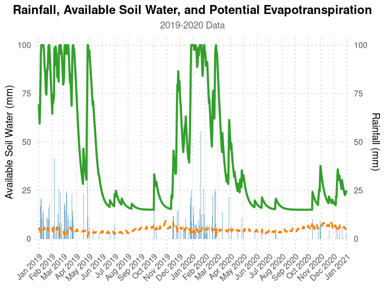

AquaBEHER is an R package designed to estimate and predict the wet season calendar and soil water balance for agricultural applications. The package integrates daily potential evapotranspiration (PET) and soil water balance parameters to compute the wet season calendar (WSC) for crop and soil water management. Using these parameters, AquaBEHER can estimate and predict the onset, cessation, and duration of the wet season based on an agroclimatic approach.
Key Features
- Daily potential evapotranspiration (PET) estimation using various methods.
- Daily soil water balance estimation based on customizable soil water holding capacity (soilWHC).
-
Wet season calendar estimation including:
- Onset of the wet season
- Cessation of the wet season
- Duration of the wet season
AquaBEHER is designed to facilitate water-efficient agricultural practices in response to climate variability and change.
⬇️ Installation
Install from CRAN:
install.packages("AquaBEHER")🌱 Quick Example
Here’s a quick example to estimate daily soil water balance:
library(AquaBEHER)
data(AgroClimateData)
# Estimate PET using Penman-Monteith method
PET <- calcEto(AgroClimateData, method = "PM", Zh = 10)
# Add PET to the dataset
AgroClimateData$Eto <- PET$ET.Daily
# Estimate daily soil water balance for a soil with 100mm water holding capacity
watBal.list <- calcWatBal(data = AgroClimateData, soilWHC = 100)
watBal <- watBal.list$data
head(watBal)
#> GridID Lat Lon Elev WHC Year Month Day Rain Tmax
#> 1 MOZ0007149 -15.09238 39.2519 392.1337 97.84914 1982 1 1 0 32.24396
#> 2 MOZ0007149 -15.09238 39.2519 392.1337 97.84914 1982 1 2 0 33.07202
#> 3 MOZ0007149 -15.09238 39.2519 392.1337 97.84914 1982 1 3 0 33.49679
#> 4 MOZ0007149 -15.09238 39.2519 392.1337 97.84914 1982 1 4 0 32.76818
#> 5 MOZ0007149 -15.09238 39.2519 392.1337 97.84914 1982 1 5 0 32.65872
#> 6 MOZ0007149 -15.09238 39.2519 392.1337 97.84914 1982 1 6 0 31.80630
#> Tmin Rs Tdew Uz Eto R AVAIL TRAN DRAIN RUNOFF
#> 1 23.11500 23.86698 20.21160 4.723783 6.447727 0 0 0 0 0
#> 2 23.12585 26.38375 20.48284 4.279407 6.802067 0 0 0 0 0
#> 3 23.12602 25.00704 20.45689 3.622179 6.485418 0 0 0 0 0
#> 4 23.60351 24.16475 20.83896 2.535047 5.838723 0 0 0 0 0
#> 5 22.79294 23.44483 21.36882 1.477617 5.231518 0 0 0 0 0
#> 6 22.43975 21.99277 21.29297 1.953415 5.026133 0 0 0 0 0📊 Visualization
Visualize the daily soil water balance, rainfall, and potential evapotranspiration (Eto) for the climatological year 2019–2020:
library(ggplot2)
# Filter the data for 2019 and 2020
watBal.19T20 <- watBal[watBal$Year %in% c(2019, 2020), ]
date.vec <- as.Date(paste(watBal.19T20$Year, watBal.19T20$Month, watBal.19T20$Day, sep = "-"), format = "%Y-%m-%d")
watBal.19T20$date <- date.vec
# Plot water balance with ggplot2
ggplot(watBal.19T20, aes(x = date)) +
geom_bar(aes(y = Rain), stat = "identity", fill = "#1f78b4", alpha = 0.6, width = 0.8) +
geom_line(aes(y = AVAIL), color = "#33a02c", size = 1.5) +
geom_line(aes(y = Eto), color = "#ff7f00", size = 1.2, linetype = "dashed") +
scale_x_date(date_labels = "%b %Y", date_breaks = "1 month", expand = c(0.01, 0)) +
scale_y_continuous(
name = "Available Soil Water (mm)",
sec.axis = sec_axis(~., name = "Rainfall (mm)")
) +
labs(
title = "Rainfall, Available Soil Water, and Potential Evapotranspiration",
subtitle = "2019-2020 Data",
x = NULL, y = NULL
) +
theme_minimal(base_size = 15) +
theme(
plot.title = element_text(face = "bold", size = 18, hjust = 0.5),
plot.subtitle = element_text(size = 14, hjust = 0.5, color = "grey40"),
axis.text.x = element_text(angle = 45, hjust = 1),
panel.grid.minor = element_blank(),
panel.grid.major = element_line(linetype = "dotted", color = "grey80")
)
📬 Contact Us

The Genetics Group at the Institute of Plant Sciences is a culturally diverse and research-driven team focused on advancing agricultural innovation. Our interdisciplinary approach combines crop genetics, climate science, and participatory strategies to develop sustainable farming solutions.
We are based at Scuola Superiore Sant’Anna, Pisa, Italy.
For inquiries, reach out to: - Matteo Dell’Acqua - Mario Enrico Pè
Learn more about our work on the group web page.